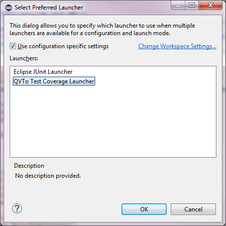

JUnit Integration Tutorial
The Code Coverage Tool provides an additional JUnit launch configuration delegate as a means to integrate with the
JUnit test framework. This allows for determining the achieved code coverage for test suites containing containing
test cases for Operational QVT (QVTO) model transformations. This section explains how to measure and visualize the code coverage of
a test suite. Basic knowledge about EMF, QVTO, JUnit is assumed.
Note: The example created by following the tutorial is available here.
Steps
- Create a QVTO transformation, e.g. from this tutorial.
- Create a Plug-in project.
- Add a JUnit test case to the project
- Add and implement a test case. An example code snippet is listed below:
- Run the JUnit test (Run As -> JUnit Test)
- A dialog will be presented, asking to chose between the available JUnit launch delegate. This includes
the one contributed by the Code Coverage Tool, which is the Operational QVT Interpreter Coverage Launcher. Either use
configuration specific settings or change the workspace global setting to prefer the Operational QVT Interpreter Coverage
Launcher. The former method allows ruling out the Operational QVT Interpreter Coverage Launcher in case a JUnit test suite does
not include any QVT model transformations.

- Press OK to confirm your choice. The test case will now be executed.
- Upon successful execution of the test case, the Operational QVT Code Coverage View is instantiated and given focus, in order
to directly present the coverage data.